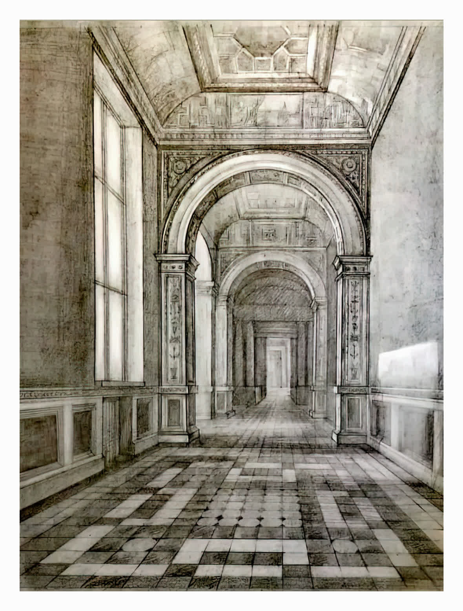
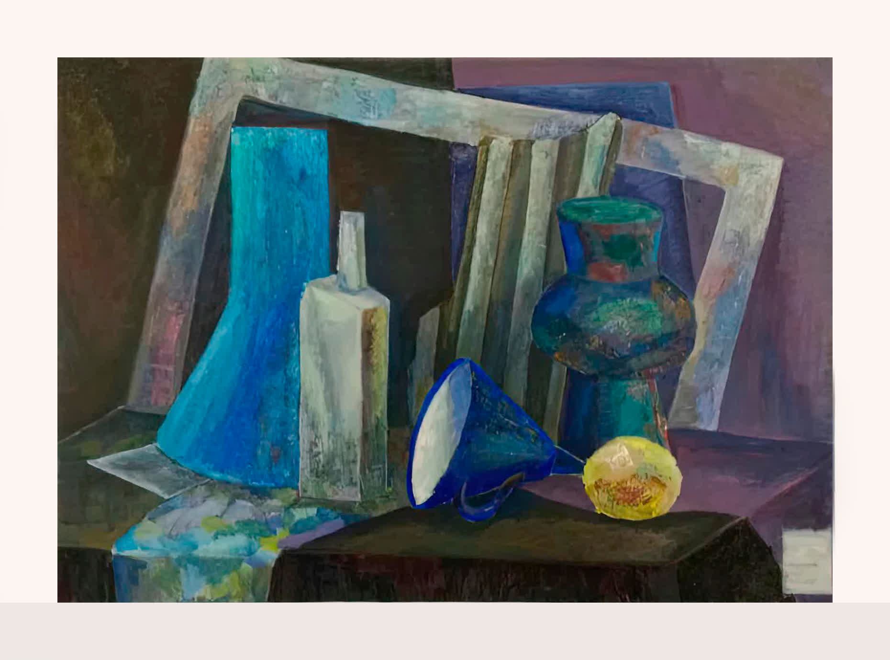

Сертификат
Творческий проект «Дерзай-твори!»
Успешная подготовка учащихся МБУДО ДХШ Южно-Сахалинска к X Международному художественному конкурсу «В её глазах миры отражены».
Больше 15 лет я работаю в художественной сфере, учу детей, подростков и взрослых видеть форму, мыслить композицией и уверенно работать с материалом.
.png)
Я окончила отделение изобразительного искусства ДШИ №4, прошла подготовительные курсы при Академии Штиглица в 2016 году и получила степень бакалавра по направлению «Дизайн среды» в 2017–2021 годах.
Рисунок и живопись изучала у художников Санкт-Петербурга: Елены Алфёровой, Александра Гущина, Валерия Миронова, Александра Спицына и Мартина Тер-Саркисяна.
С 2014 года работала с детьми и подростками в Южно-Сахалинске и Санкт-Петербурге. С 2022 года веду частные занятия в «ART-XAOS» и готовлю абитуриентов к поступлению в художественные вузы.
«Новые имена» — диплом за экспозицию «Герои чеховских произведений» к 155-летию А. П. Чехова, X Сахалинский фестиваль-конкурс детского художественного творчества.
«Ступени мастерства» — дипломы в номинациях «Дизайн и декоративная композиция» и «Академический рисунок и живопись», диплом II степени.
«Jeunesse Russie-Europe», Марсель — Гран-при в категории Peinture и III место в категории Art décoratifs, франко-российское партнёрство «Perspectives».
«Трансформация пейзажа» — участие в выставке в Санкт-Петербурге.
Каждая карточка — отдельный документ: сертификат, диплом или благодарственное письмо. После добавления сканов они станут визуальным архивом достижений.
Успешная подготовка учащихся МБУДО ДХШ Южно-Сахалинска к X Международному художественному конкурсу «В её глазах миры отражены».
Благодарность от МБУ ЦНК «Радуга» руководителю клубного формирования за организацию и активное участие в художественной выставке.
Личный вклад в организацию и проведение творческих конкурсов, выявление и поддержку одарённых детей.
Международный очный конкурс по изобразительному искусству. Диплом модератора площадки.
Подготовка участника конкурса изобразительного искусства «Коробка с карандашами».
Диплом преподавателя студии «ART-XAOS» за высокую художественную подготовку учеников-призёров 28-й международной выставки-конкурса архитектурно-дизайнерского творчества молодёжи.
Здесь можно показывать личные работы, рабочие эскизы и моменты из студии. Галерея использует изображения, уже добавленные в проект.


.png)
.png)
От первых упражнений до портфолио для поступления: план строится вокруг цели, текущего уровня и темпа, в котором комфортно работать.
Посмотреть программы